From smart devices to agents that act, and why the hardware has to stay in the loop
1 · Edge AI · 2 · Hardware in the agentic loop · 3 · Edge AI that acts
Joakim Eriksson, RISE Research Institutes of Sweden — guest lecture, October 2026
1
Edge AI
AI is moving out of the data centre and into the things around us. Why now, on what hardware, and what makes it hard.
1 · Edge AI2 · Hardware in the loop3 · Edge AI that acts
1 · edge ai
From connected things to things that act
Twenty-five years of the Internet of Things. Every step moved compute closer to the physical world.
2000People online
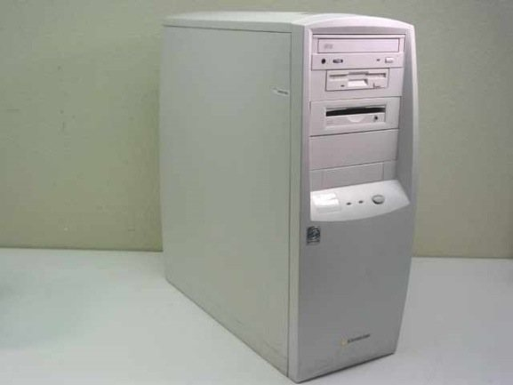
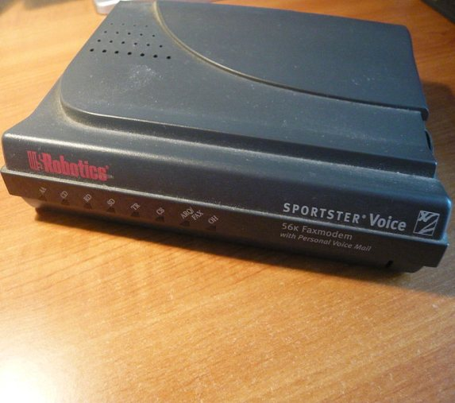
Desktops, dial-up and phones. Connectivity is for people.
2010Media everywhere
Smartphones, smart TVs, consoles. Media goes mobile.
2020Embedded intelligence
Lighting, meters, washers, mowers. Devices start to understand.
2025 →Things that act
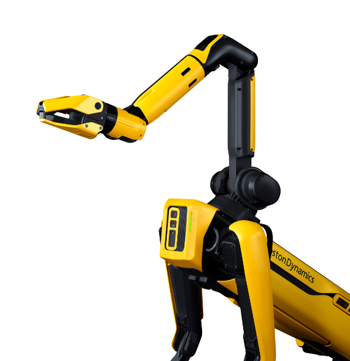
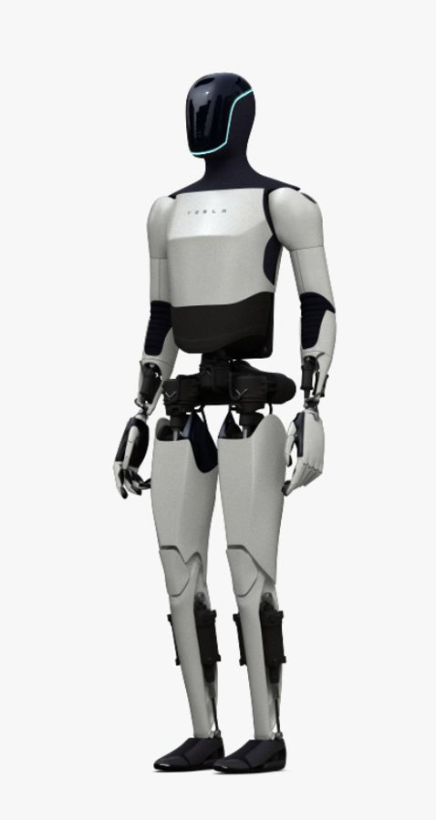
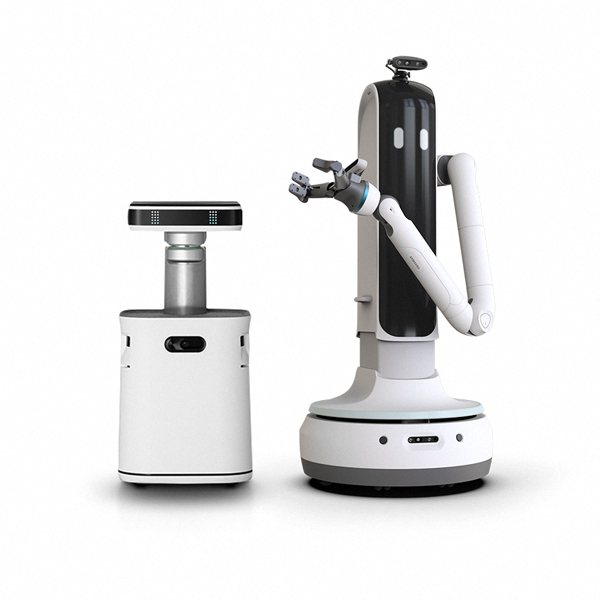
Robots and autonomous systems that sense, reason and act, with the AI on board.
1 · edge ai
Edge AI: run the model where the data is born
On the device, or on a gateway next to it. The cloud still trains the models and coordinates the fleet.
On the edge
In the cloud
Latency
Milliseconds, on the device. Safety systems need this.
A network round trip, every time
Connectivity
Little uplink; keeps working offline
Streams raw data; stops when the link does
Privacy
Camera and microphone data stay local
Personal data goes to a third party
Compute
Limited: power, memory, heat
Practically unlimited: training and the biggest models
Why now: billions of connected devices, and the chips inside them went from 8-bit and kilobytes to 32-bit, megabytes and on-chip AI accelerators.
1 · edge ai
The edge is a range, not a place
Where a model runs depends on its size, the power budget, and how fast the answer must come.
Microcontrollers
Sensors, wearables, appliances. Small models only: TinyML. Now with tiny AI accelerators on chip (STM32N6).
KB–MB RAM · milliwatts
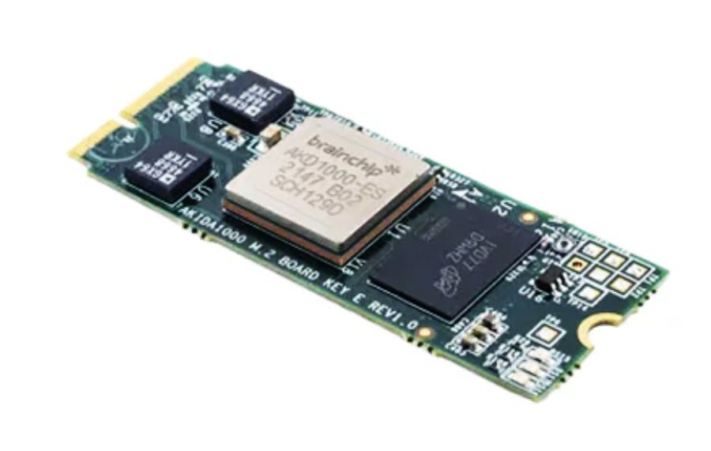
Devices with an NPU
Phones, smart cameras, gateways. A neural processing unit on chip, or added: Coral (4 TOPS), Hailo-8 (26 TOPS).
1–30 TOPS · ~2–5 W
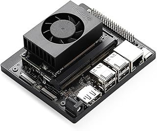
Edge computers
Jetson-class GPU boards and industrial PCs on the factory floor or at a telecom site. Generic local AI.
8 GB · 40–67 TOPS · 7–25 W
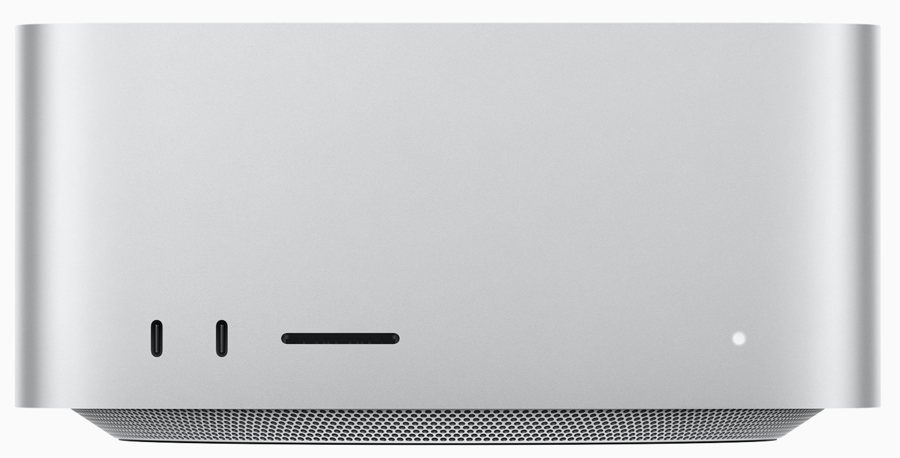
Edge servers, laptops
An edge rack on site, or a laptop. New in 2026: a multimodal language model runs here, offline.
tens of GB · tens to hundreds of W
milliwatts, years on a coin cellbigger models, more power, more heatwall power
CandyTron 4000, part three, lives in the last column: speech, vision and a language model on one laptop.
1 · edge ai
The software: an open pipeline with closed ends
1 · Trainin the cloud or on a GPU cluster · PyTorch, TensorFlow
2 · Optimise for the targetquantise, prune · LiteRT (TF Lite), ONNX, TVM
3 · Deploy on the acceleratorTensorRT, Core ML, Edge TPU compiler, each NPU's own SDK
4 · OS and firmwareLinux, Zephyr, Contiki-NG
mostly open source often proprietary
Every accelerator brings its own compiler and runtime. A model that runs on one NPU has to be converted, and re-checked, for the next.
Quantisation changes the model. 32-bit floats become 8-bit integers: four times smaller, much faster, slightly different answers. Someone has to check that "slightly" is acceptable.
Seam AI (RISE with Assa Abloy, Husqvarna and Antmicro) looked for one end-to-end, open toolchain for AI in products, built around Antmicro's open framework, Kenning.
Training a model is the easy part. Getting it onto ten thousand devices of five kinds, and keeping it there, is the work.
1 · edge ai
Three places edge AI already works
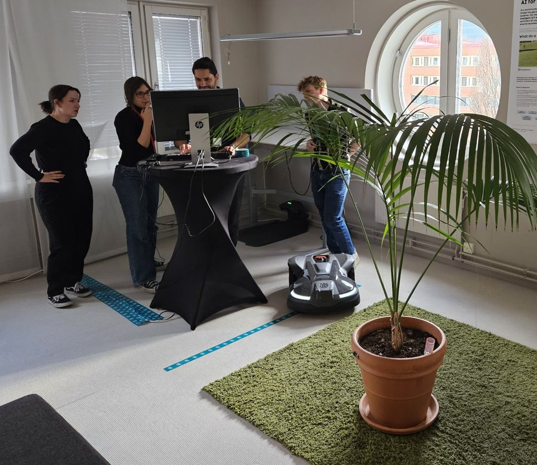
In the product
Seam AI: in-device machine learning in automowers and smart doors, on an open toolchain, shown in proof-of-concept products.
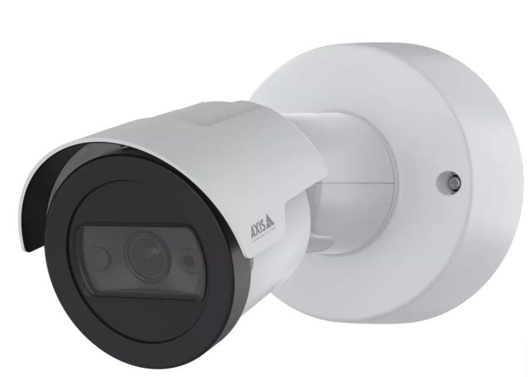
In the camera
High-resolution network cameras with an AI accelerator inside: object detection where the pixels are. Some let you deploy your own model.
In control of a process
A sawmill: spot a problem on the line early and act before it becomes a long stop. Local GPUs on site, not in a device.
Why products get it: control that keeps working when the link drops, products that improve with software updates, and products that adapt to where they are. And because competitors add it.
1 · edge ai
Out in the wild: what can go wrong
A data centre is locked and guarded. An edge device sits in someone's garden, hallway or factory.
Data extraction
Someone takes over a camera or a microphone to listen and watch.
Manipulation
A hijacked device controls the world: a lock, a light, a valve.
Sabotage
One hacked device floods or disrupts the rest of the system.
Botnets
Thousands of weak devices recruited to attack someone else.
Fooling the model
Inputs crafted to make the AI see or hear the wrong thing.
Ransom
Your system or your data, held until you pay.
New with language models on the device: anything it hears or reads can carry an instruction. A spoken sentence is an input channel. Part three shows what that means for a robot arm.
1 → 2 · the hard part
The hard part is building it
1Resources and energy
An edge device can't match a cloud server, and a model that runs all the time drains a battery quickly.
2Many device environments
Embedded programming, hardware optimisation, five chips with five toolchains. Then updates for thousands of devices in the field.
3Security
Out in the wild, constrained, and expected to work for ten years.
This year a lot of that code started to be written by coding agents. They are fast. Do they know it works on the chip?
2
Hardware in the agentic loop
Four embedded projects built with coding agents this summer. Very different projects, one pattern.
1 · Edge AI2 · Hardware in the loop3 · Edge AI that acts
2 · hardware in the loop
The loop a coding agent closes is its own
Coding agents are extremely good at closing loops they can observe.
Left alone, the loop they observe is their own model of the world: the code they wrote, the tests they wrote, the log lines they expected.
Tests written by the same model that wrote the code share its blind spots. Green is not the same as correct.
Hardware does not share the model's blind spots.
Tests that are green by accident are the failure mode to fear: the tests pass, the model is happy, and nobody touched a board.
2 · hardware in the loop
Put the hardware in the loop, and give the agent eyes
Three roles for hardware in the loop. Part three reuses all three, with a robot instead of a board.
An open-source OS for small wireless IoT devices · released 2026-08-13 · every board test run by the agent
0commits
0pull requests
0checks required before release
0 / 18real boards, every row green
The merge team set the rules, as every year: a release plan, a runbook and a checklist of real boards. No release until every row is green.
Reading the CI configuration the agent noticed: "CI has never tested the release head." The release itself became what CI has to pass.
It built the firmware, loaded it onto every board on the checklist, read what the board printed and filled in the row, with a report under each.
The human's job: plug in the cable, press the button.
Simulation proves the logic; the board proves everything else. The board is the oracle — and the agent now runs the oracle.
2 · hardware in the loop
agentcodeemulator = proxyboard = calibrator
2Cooja-NG: the chip calibrates the emulator
The Contiki-NG network simulator, rewritten to be fast and repeatable, kept honest by the real boards it imitates
The real chip calibrates the emulator
On the real board, the chip's own cycle counter says: one switch into the secure world and back (TrustZone) costs 58 cycles.
The measured number becomes the emulator's timing, never the other way round.
The board finds what the emulator cannot
A radio stopped receiving: the driver asked the chip for status so often that incoming packets never got a turn. Only visible with a logic analyzer on the wires.
The emulator closes the CI loop
93 / 93 of the project's tests pass on it.
~2400× real time: a 60-second scenario in under 0.1 s.
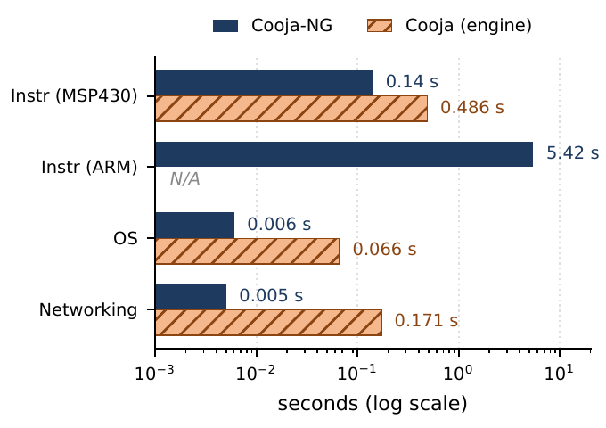
A four-year-old flaky test: one compiler, 15 runs: the other compiler passes "by luck of stack contents". Cause: uninitialised bytes in a radio setting, hidden since 2022. Fix: one line. A deterministic simulator turns "flaky" into "14 of 15", and 14 of 15 is something an agent can work on.
2 · hardware in the loop
agentcodeemulator = proxyboard
3A home-made CPU: 497 lines to a computer
A small RISC-V processor in 497 lines of Verilog, on a hobby FPGA board (a chip you reprogram into any circuit), open-source tools only
Boots the unmodified Contiki-NG operating system and shows a C64-style greeting over HDMI. Written and debugged with an agent; the human held the board and the datasheets.
The official RISC-V test suite, run in simulation: 56 of 58 pass; the 2 failures are features deliberately left out.
The simulation writes the screen out as PNG images: a wrong character becomes a diff the agent can read.
Then the real board
The HDMI encoder was bit-exact in simulation. On the board: a black monitor. One missing line in the pin configuration put the HDMI pins in the wrong electrical mode. "Differential pads are a constraint, not code."
frame 000
The simulation's "virtual monitor": Contiki-NG booting on the new CPU, one PNG per frame. The agent can see the screen.
The screen images were right; the photons were wrong.
2 · hardware in the loop
agentcodeemulatorboard = oracle + calibrator
4An ESP32 emulator, checked against the real chip
esp32sim runs a product's real firmware from the chip's boot ROM onwards, on a laptop or in a browser tab
What
How it was checked
Result
Instruction decoding
Every instruction of three real firmware images, compared with the standard disassembler
977 k / 161 k / 126 k instructions, 0 mismatches
ESP32-S3
Real chip and emulator stepped one instruction at a time, side by side, over a debug cable
8 000 + 3 000 steps, never diverged
ESP32-C3 / C6
The emulator's boot output compared line by line with the real board's
205 / 208 and 203 / 204 lines identical
What only the real chip could tell us
Three instructions the emulator did not know existed.
An interrupt setting at the wrong address: the handler re-entered itself 3 867 times. (next slide)
The reference never comes from the model:a disassembler, the real chip, a boot log.
2 · hardware in the loop
agentcodeemulatorboard = oracle
Why the cause was 500 KB from the crash
One wrong address in the emulator. The real chip's boot log was the only thing that disagreed.
A timer interrupt arrives. The chip drops what it is doing and runs a small handler. The handler's first act is to flip a hardware switch that says "no more of these until I'm done".
The emulator had that switch at the wrong address. The write landed nowhere. Nothing complained.
So the same interrupt fired again, inside its own handler. Each time, the chip notes where it was on the stack, its scratch pile in memory, and starts over. 3 867 times.
The stack grew down through all of memory and into the program itself. When the chip next ran that part of the program, it was stack rubbish: illegal instruction.
The crash pointed at the handler. The bug was one address in a register model, 500 KB away, and only the real chip's boot log disagreed with the emulator.
the switch the handler flips emulator: wrong address, write lost
RAM
program code
illegal instruction
500 KB
Live: the same emulator, compiled to WebAssembly, booting the product's real firmware in this browser tab. Press D to reboot · ↓ two IoT nodes on one radio.
Extra: two emulated wireless IoT nodes running Contiki-NG on one shared, emulated radio channel, in this tab. The second powers on 1.3 s later; both hear each other's broadcasts.
2 · hardware in the loop
Two stories the green tests never told
Two wrongs made a right
The emulator's audio output assumed 44.1 kHz; the music player actually asks for 22.05 kHz → music at double tempo…
…while the emulator ran at 0.5–0.8× real time. The errors cancelled. Every test stayed green.
It surfaced the day a speed-up made the emulator run at exactly real time.
2× tempo × 0.5× speed ≈ sounds right
Light one LED and look
The wiring order of a 3×3 LED module was "inferred from two photos." Wrong. Twice.
A self-test firmware lights one LED at a time on the real module: the wiring snakes down and up the columns, and the second slot holds the module turned 90°.
port 7
port 11
LED 0 in wiring order → where it really sits, measured.
Two photos → wrong map, twice. One self-test → right, once.
2 · hardware in the loop
The pattern: six rules
1Make the loop observable
What the board prints, what its screen shows, instruction counts, cycle counts. If the agent cannot see it, it cannot fix it.
2Make it deterministic
"Flaky" is not a work item. "14 of 15" is.
3Compare against the real chip, not yourself
A standard disassembler, the real chip stepped alongside, a real boot log. The reference must come from outside the model.
4Pin the reference outputs, then go faster
Speed is safe only when every output stays identical, and going faster is how hidden bugs surface.
5Keep the receipts
Data, logs and a way to reproduce, for every claim, including what was rejected.
6A human holds the board and names the cause
The agent applied fixes once we named the cause; it could not reliably name the cause itself.
None of the rules is about the model. All of them are about what the model gets to observe.
2 · hardware in the loop
Where the agents stopped
What we saw, again and again
"The agent could apply a fix once we named the cause, but it could not reliably name the cause itself."— Cooja-NG paper, SNCNW 2026
"…often proposed a local workaround ('enlarge the buffer', 'treat as non-fatal') when the correct fix was further up the call stack."— Cooja-NG paper, SNCNW 2026
What worked: a persistent bug ledger — human-named root causes, fed back into the agent's context on every run.
Three correct numbers, one question
6.15×speed-up on a synthetic benchmark
3.42×on a real operating system
1.00×on the demo firmware: it is paced to wall time
All three came with receipts, and all three are right. The last one measures a loop that cannot go faster than the clock on the wall.
Which number the work was for is a question the agent never asked. That was the human's job.
2 → 3 · now flip it
Now flip it: the agent runs on the edge device
Same loop, same three roles. The agent no longer writes code for a board; it is the product, and it acts.
Hardware in the loop
CandyTron 4000
The agent
writes code and firmware
listens, decides, moves a robot arm
Where it runs
in the cloud, on a developer's machine
on one laptop, no network
Proxy
the emulator
a simulated arm and camera (--sim)
Oracle
the real board
a real table, a real arm, a noisy hall full of people
What it observes
serial output, frames, counters
microphone, faces, the candy the camera sees
The human
holds the board
asks for candy, and is in range of the arm
3
Edge AI that acts
A laptop that hears, sees and moves a robot arm, with no cloud. What a year changed, and what the real world taught it.
1 · Edge AI2 · Hardware in the loop3 · Edge AI that acts
3 · edge ai that acts
Where this is going: models that output actions
Humanoids for the home
Consumer robots grow arms
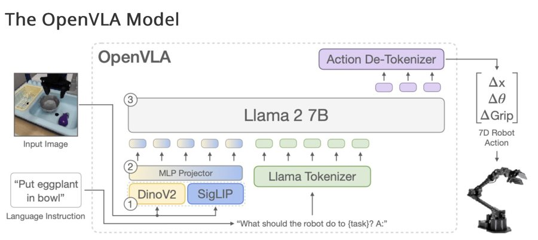
OpenVLA: image + instruction in, arm motion out
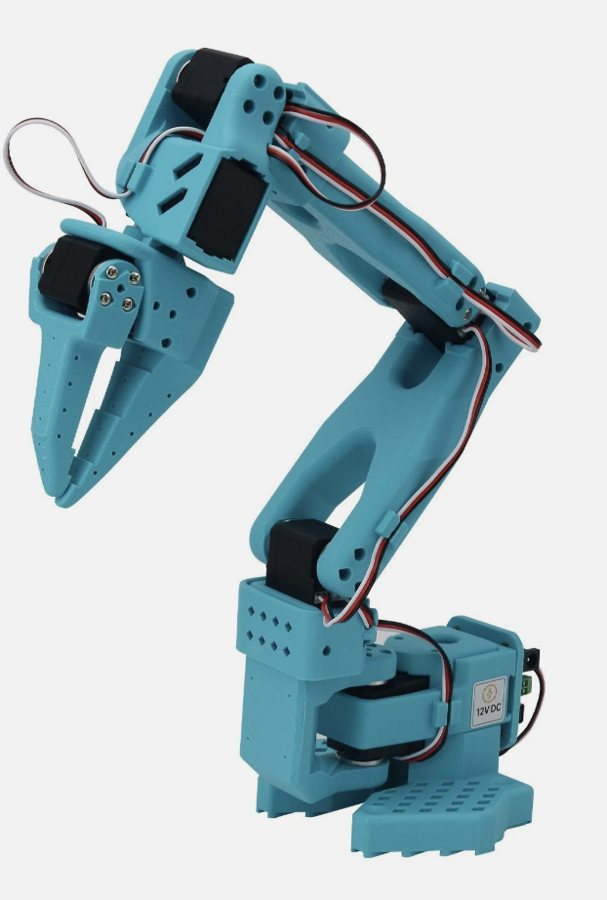
Hugging Face LeRobot: open arms, open data
Vision-language-action models
Inputs: camera images and sound, as well as text.
Outputs: actions, not just words: a gripper pose, a motor command.
Today's practical step is in between: a multimodal model that hears and sees, and acts through tools that a program then executes.
That in-between step is CandyTron. It runs on a laptop, so it is edge AI, and it moves things, so it is a safety question.
3 · edge ai that acts
CandyTron 4000
Idea: connect several AI models into one system that solves a task together with people, and has effects in the real world.
Instance: a robot arm and a camera over a table of candy. You walk up, talk to it, and ask for candy. It answers, and hands it to you.
Hands: a Niryo Ned 2 six-axis arm
Eyes: a table camera with a YOLO detector fine-tuned on the candy, plus a camera that recognises faces
Ears, brain and mouth: a speech-capable language model and a text-to-speech voice
Only local models, on one laptop
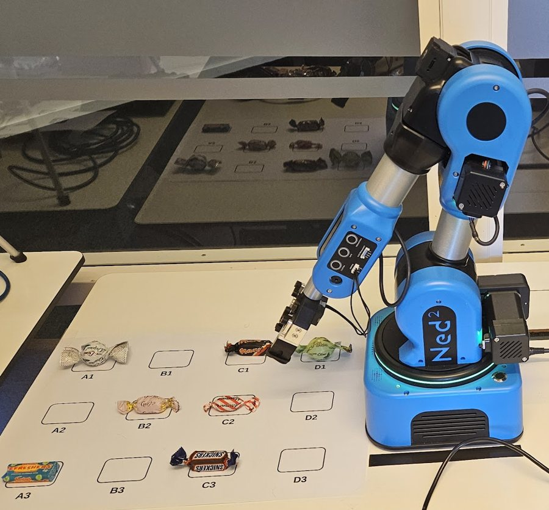
3 · edge ai that acts
One year on: from a gaming laptop to a MacBook
The same robot, October 2025 and today. Three models in a chain became one model that hears.
October 2025
October 2026
Computer
Gaming laptop with an RTX 5070 Ti GPU
A MacBook, Apple silicon
Ears
Whisper speech-to-text, then text to the model
gemma4 does the speech-to-text too. Direct-audio mode: it hears the speech itself, and hearing, thinking and the tool call are one model call
Brain
Gemma 3 with function calling
gemma4 via Ollama, calling the robot's tools over MCP
Mouth
Piper text-to-speech
Kokoro with fine-tuned Swedish voices; Piper as fallback
Who is talking
—
Face recognition, and a voiceprint check on every sentence
Time per turn
—
≈ 0.4 s in direct-audio mode, ≈ 1 s with the separate speech-to-text step
One lesson: the model hears, thinks and calls tools well in one call, but asking it to also write a word-for-word transcript in that call made all three worse. The transcript for memory is now a separate background pass, after the reply.
3 · edge ai that acts
Inside: one laptop, three programs, no cloud
Everything talks over 127.0.0.1: no audio, image, voiceprint or transcript leaves the laptop. MCP: the Model Context Protocol, a standard way for any agent to use a system's tools.
3 · edge ai that acts
agentsimulator = proxya noisy hall = oracle
The real world is the oracle: a noisy fair
It worked in the lab. A noisy hall full of visitors found what the lab never showed.
What the hall found
Why
Fix
"I moved it to you", and the arm never moved
On audio turns the model often narrated the action instead of calling the tool
Detect an action claim with no tool call; give the model one retry, with tools
The wrong action
One tool had no description at all, and moves a random candy. Nothing checked the arguments.
Say what each tool does and when not to use it; check the request against the live scene
Crowd chatter heard as speech
The voice detector calls background babble speech: every turn ran to the 15 s limit, phantom turns from the crowd
A near-field gate: only sound clearly above the room's own noise floor counts
Answering the wrong person
Someone else in the crowd spoke
Check each sentence's voiceprint against the visitor in front of it
2/4 → 0/4random moves on unclear speech: it now asks instead
4/4tool calls on clear speech, unchanged
2.1 scaptured from crowd + visitor; crowd alone: nothing
3 · edge ai that acts
Put the guard where the hardware is
The question after the fair: is the arm actually safeguarded? The honest answer was no.
What a model could have done
Send a position as "[0.3, 0.1, 0.4, 0, 0, 0]": the arm code parsed it as coordinates and would have driven the arm to an arbitrary point.
Grip air at an empty square, while the server reported "Successfully moved".
Drop one candy on another, or queue a move on a busy arm.
The checks that existed lived in one client. Every other client, and every instruction hidden in speech, went around them.
The fix: refuse at the boundary
The robot's own tool refuses, with a reason the model can act on: unknown positions, coordinates, empty source, occupied target, busy arm.
All seven refusals verified through real MCP calls; a normal handout still runs.
The reply now says the move started, not that it succeeded: a collision can still cancel it.
Refused: there is no candy at B1, so the arm would grip nothing. Candy is at: A3 (Snickers), …
The rule for edge devices that act: check where the actuator is, not where the model is. Every client, and every injected instruction, has to pass through it.
What to take home
1Edge AI is a range
From a milliwatt microcontroller to a laptop running a multimodal language model. Latency, power, privacy and connectivity decide where a model runs.
2Agents write the code; hardware keeps them honest
Oracle, calibrator, proxy. The reference must come from outside the model: a real chip, a real board, a real boot log.
3When the agent acts, the world is the test
A noisy hall finds what the lab doesn't. Record everything, make it repeatable, and put the guard next to the actuator.
The models are super competent. Put the hardware in the loop anyway.
Live: CandyTron 4000
Walk up and ask for candy, in Swedish or English. Watch what it sees, what it hears, and when it refuses.